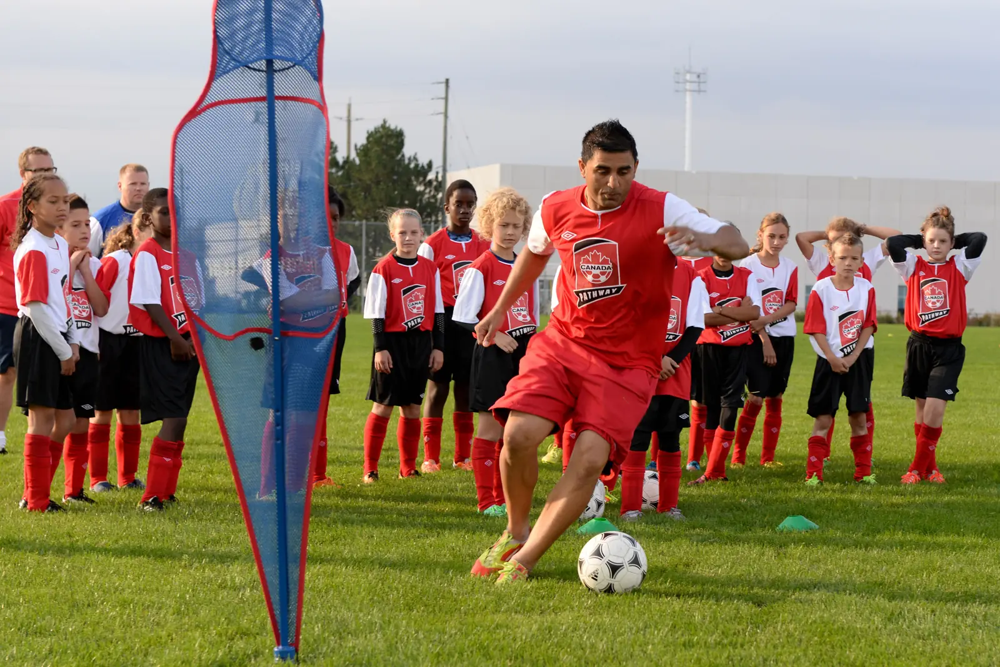
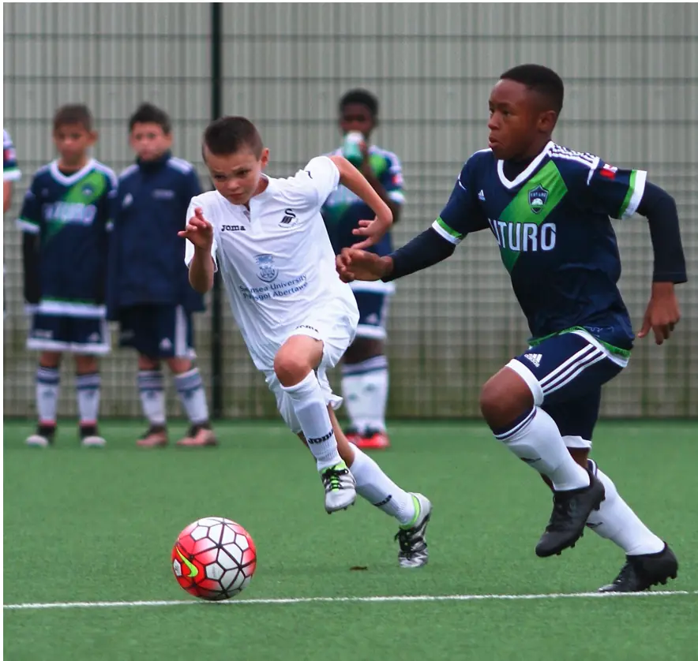
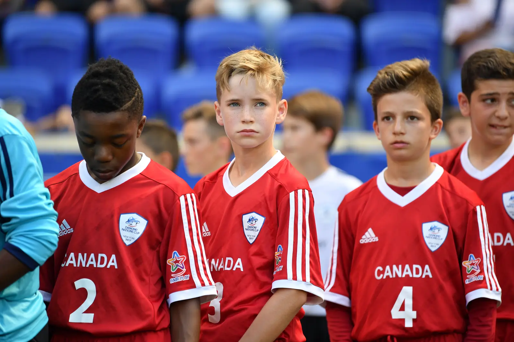

Three sessions and a match, every week.
Futuro is not recreational soccer. Players train like a pro academy all year and are held to a clear standard on the field, in the classroom and in how they carry themselves.
A pro-academy week, all year.
Team sessions
Three field sessions a week, plus a match.
Strength session
Weekly, for ages 13–18, grouped by biological age. Early-maturing 13-year-olds are identified to join.
Goalkeeper session
Keepers train with the team three times a week plus once more with the GK coach.
Months a year
Year-round training in two phases: Fall/Winter and Spring/Summer.
should expect
Demanding training, honest feedback and a high bar every week. In return, your child is coached by people who have worked inside pro clubs and national-team programs, with a proven route to university and professional soccer. Every Day In Every Way means we expect that effort from every player, on and off the field.




The six standards.
Technical genius
Technical speed: how quick and clean a player is on the ball. Receiving, running with the ball, retaining and releasing it, trained until it holds up under pressure.
Pro-level intensity
Our Chaos Coach runs high-intensity, game-realistic sessions that build fast transitions and quick decisions under pressure.
Tactical intelligence
A possession-based, attacking style. Players learn when and how to attack and defend, in balance and out of balance.
Speed & power
Sprint mechanics with the Bahrain national team's sprint coach, plus a dedicated strength and conditioning coach.
Mental strength
Players stay confident and positive, control their emotions and move on quickly from mistakes.
School standards
Players must meet minimum grades to stay in the academy and meet our Education Advisor every reporting period.
A clear path from U8 to U18.
Boys and girls competitive teams from Eastern Ontario and Western Quebec, plus U21 and senior teams, and exhibition matches against top opposition.
Learning to Train
1v1 attacking, ball mastery, agility and confidence. Small-sided 5v5 to 7v7.
Learning to Train
9v9. Receiving and distributing, overloads, defending and decision-making.
Train to Train
11v11. Exposure to pro-club academies and ID camps; position-specific work.
Train to Train
Youth national-team pathways, university showcases and individual fitness plans.
Train to Compete
University recruitment, semi-pro and pro trials, and national-team exposure.
Four weeks with
Europe's academy coaches.
A 140-hour camp from July to mid-August for ages 8–13, coached by professional youth-academy coaches from Europe alongside Futuro staff.
- A chance to be scouted by pro-academy coaches for trials in Europe
- Technical and tactical sessions, plus game analysis by the players
- Classroom presentations from coaches and players
- A leadership program
Guest coaches have come from
- Pro youth academies in Spain, the Netherlands, England, Italy, Denmark, Belgium, France and Croatia
- National teams of England, Canada and Costa Rica
- University programs in the USA and Canada
Athletic development.
See how Futuro's athletic development program trains speed, strength and movement.
Intro to Soccer & Li'l Sambas
Year-round programs for ages 3–12, open to every level. A great first step before the academy.